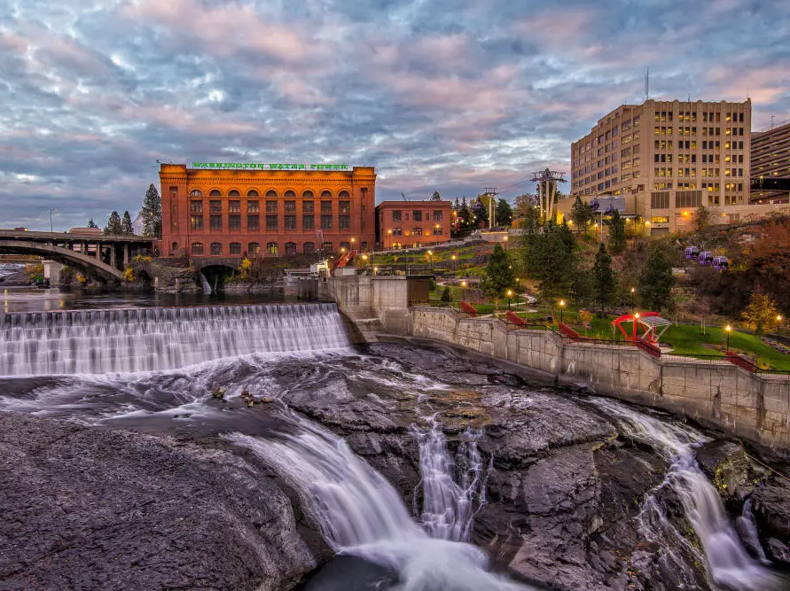
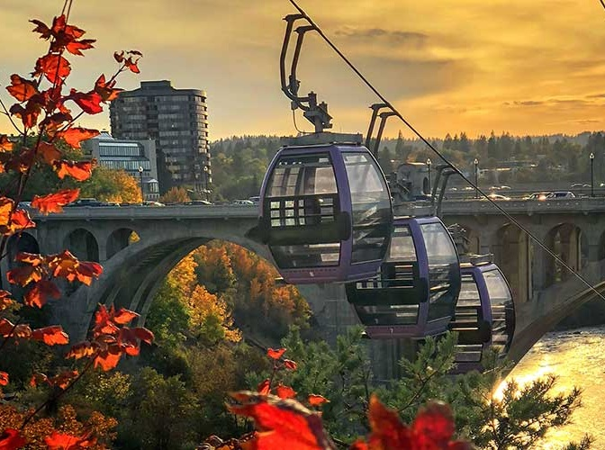
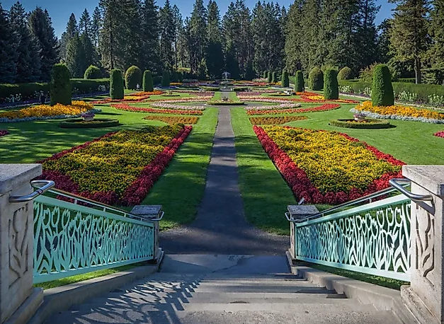
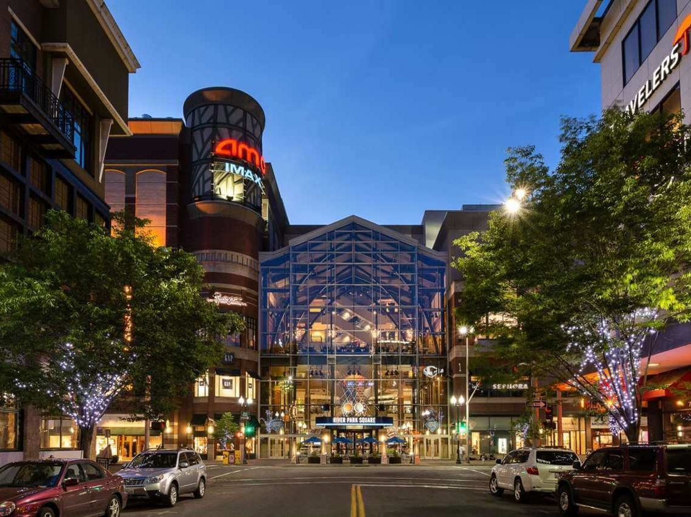

General City Information
- Population: 228,989
- Metro Area Population: 600,292
- Date Incorporated: Novermber 29, 1881
- Classification: Urban
- Average Income Level: $60676.00 per household. Below state median of $94952.00
Located in Eastern Washington next to the Idaho state line, Spokane is the second largest city in Washington State. Bordered to the north and east by the Selkirk range, an offshoot of the Rocky Mountains, the south by the rolling hills and wheat fields of Southeastern Washington, and to the west by the arid scablands of the Columbia Basin, the city sits at a unique juxtaposition of biomes, creating a unique climate of cold, snowy winters, and hot, dry summers. Spokane is the place for outdoor enthusiasts, offering nearly every outdoor activity imaginable as well as Hoopfest, the world's largest basketball tournament.



